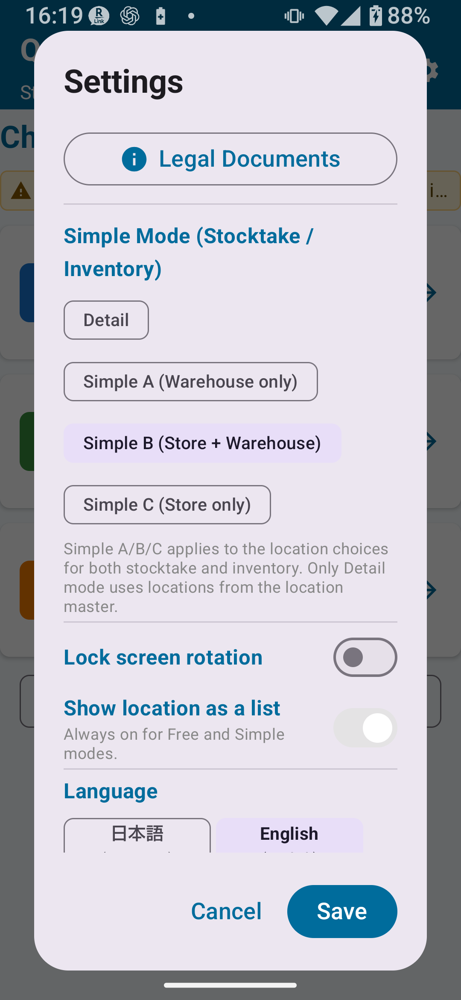

Simple Unlock Overview
The Stocktake Simple Unlock raises the limits on master records, stocktake history, and export records, enables screen rotation locking, and lets you choose product barcode formats within the core six formats.
The core stocktake workflow is the same as in the free tier. The expanded limits make it practical to continue using the app on the floor over a longer period.

Simple Unlock Limits
| Item | Free Tier | Simple Unlock |
|---|---|---|
| Master records | Up to 30 | Up to 300 |
| Stocktake history records | Up to 30 | Up to 1,000 |
| Export records | Up to 30 | Up to 300 |
| Lock screen rotation | ✗ | ○ |
| Detailed rule settings | ✗ | ✗ (requires the Full Unlock) |
Differences from Free Tier
- Master record limit raised from 30 → 300
- Stocktake history limit raised from 30 → 1,000
- Export limit raised from 30 → 300
- Screen rotation locking becomes available
- Easier to maintain continuous operations on the floor
Simple Modes A / B / C
In Stocktake Settings, choose one of Simple A, Simple B, or Simple C. The chosen mode determines which location options are presented during stocktake and other workflows. In Simple C, only the store location is shown in the workflow. Even if a warehouse row remains in the Location Master list, this is not a problem.
| Mode | Locations Shown | Example Use |
|---|---|---|
| Simple A | Warehouse only | Operations in a single warehouse |
| Simple B | Warehouse + Store | Stocktaking both warehouse and store |
| Simple C | Store only | Operations in a single store |
How to Set the Mode
- Go to Settings → Stocktake Settings.
- Select the mode you want to use (Simple A / Simple B / Simple C / Detail).
- Save settings and return to the stocktake screen.
Handling Basic Locations
The Simple Unlock uses "Warehouse" and "Store" as its basic locations. The actual display names are created to match the device's primary language.
Location Selection During Stocktake
Location options during stocktaking are determined by the mode you have set (Simple A/B/C), keeping input minimal and the workflow smooth.
Difference from Detailed Locations
| Item | Simple Mode (A/B/C) | Detail Mode (Full Unlock) |
|---|---|---|
| Location options | Fixed choices: Warehouse and/or Store | All locations registered in Location Master |
| Setup complexity | Simple | Requires detailed configuration |
| Required plan | Free Tier or above | Full Unlock (switch mode to "Detail") |
Stocktake Step-by-Step (Simple Unlock)
From Start to Save
- Confirm which Simple Mode (A/B/C) you are using under Settings → Stocktake Settings.
- Tap Stocktake on the top screen.
- Scan a barcode or enter a product code.
- Confirm the product name (enter it if the code is unregistered).
- Select the location where you counted the stock (warehouse, store, etc.).
- Enter the quantity you physically counted.
- Enter an optional memo.
- Tap Save to record the entry.
- Scan the next product and repeat steps 3–8.
- Once all products are entered, review the full stocktake history.

What Gets Better in the Simple Unlock
Screen Rotation Lock Makes Floor Work Easier
The screen no longer rotates when you tilt your phone sideways. This is especially helpful when scanning barcodes and entering quantities simultaneously on the floor.
1,000-Record History Supports Long-Term Stocktaking
The history limit increases from 30 to 1,000 records, so even monthly stocktakes can be maintained over a long period.
300-Product Master Capacity for Mid-Sized Operations
Suited for ongoing use in mid-sized stores or warehouses with 30–300 products.
What Simple Unlock Still Cannot Do
| Feature | Required Plan |
|---|---|
| Detailed code rule settings | Stocktake Full Unlock |
| Detailed location rule settings | Stocktake Full Unlock |
| Detailed camera scan settings | Stocktake Full Unlock |
| Extended CSV export | Stocktake Full Unlock |
| More than 300 master records | Stocktake Full Unlock |
| Applying stocktake results to inventory and related advanced stocktake features | Stocktake Full Unlock |
Important Notes
Why Upgrade from Free to Simple Unlock
| Item | Free Tier | → Simple Unlock |
|---|---|---|
| Master records | Up to 30 | Up to 300 (10× more) |
| Stocktake history | Up to 30 | Up to 1,000 (33× more) |
| Export records | Up to 30 | Up to 300 (10× more) |
| Screen rotation lock | Not available | Available - helpful for floor work |
| Operational continuity | Risk of hitting limits and stopping | Sustainable for medium to long-term use |
- Have more than 30 products
- Want to keep monthly stocktake records long-term
- Need a locked screen orientation while working on the floor
- Have fewer than 300 products and want to keep stocktaking
📌 Chapter Highlights
- The Simple Unlock raises limits: up to 300 master records, 1,000 history records, and 300 export records.
- Screen rotation locking becomes available, improving comfort during floor work.
- Stocktake mode is chosen from Simple A (warehouse only), Simple B (warehouse + store), or Simple C (store only).
- Detailed rule settings require the Full Unlock — they are not available in the Simple Unlock.
- The workflow is the same as the free tier: Scan → Enter quantity → Save → Review history.
🔍 Notes Before Use
- Applying stocktake results to inventory and related advanced stocktake operations are handled as Full Unlock features. Check the in-app screen for the actions available in your current plan.
- When master records approach 300, export a backup and consider moving to the Full Unlock before continuing large-scale registration.
- CSV contents may differ by screen and export mode. Check the exported file and the labels shown in the app.
- Use the app's detailed location screen when your current plan and settings enable detailed locations.